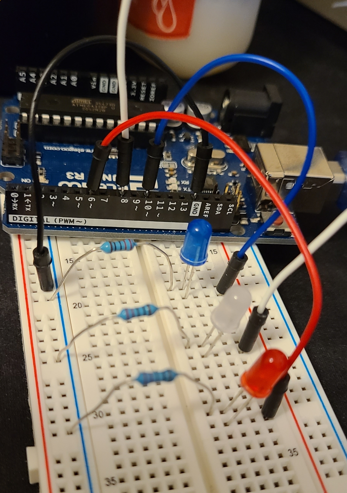
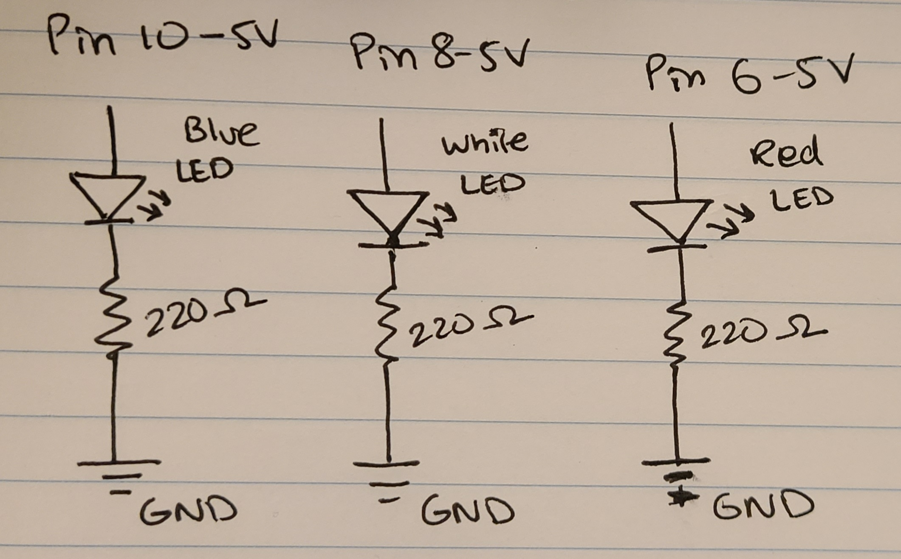
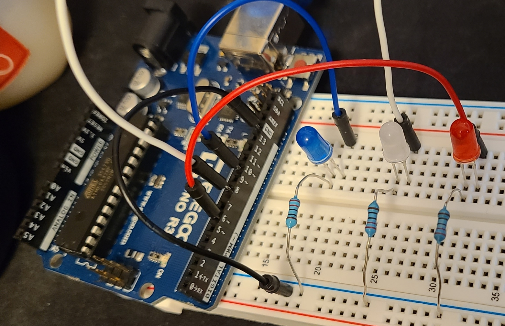

GIF

Enjoy this gif I made of the LEDs blinking!

Here is all the documentation for assignment 1!

This is a schematic diagram of the circuit I built and shows the 3 LEDs connected to the 3 different pins with a resistor of 220 ohms and a current output of 5V at the pins.

This is a top view of the breadboard circuit wjere you can see all the connections.
Here is the Arduino code I wrote and used for this blinking pattern:
/*
HCDE 439: Physical Computing (Winter '22)
Student: Atharv W
Assignment 1: Blink
Turns on the 3 LEDs independently one after the other with a delay of 0.25 seconds
following the pattern Blue-White-Red repeatedly.
*/
// the setup function runs once when you press reset or power the board
void setup() {
// initialize digital pin LED_BUILTIN as an output.
pinMode(10, OUTPUT); // Blue LED
pinMode(8, OUTPUT); // White LED
pinMode(6, OUTPUT); // Red LED
}
// the loop function runs over and over again forever
void loop() {
digitalWrite(10, HIGH); // Blue LED - ON (HIGH is the voltage level)
digitalWrite(8, LOW); // White LED - OFF
digitalWrite(6,LOW); // Red LED - OFF
delay(250); // delay of 0.25 seconds or 250 milliseconds
digitalWrite(10, LOW); // Blue LED - OFF
digitalWrite(8, HIGH); // White LED - ON
digitalWrite(6,LOW); // Red LED - OFF
delay(250); // delay of 0.25 seconds or 250 milliseconds
digitalWrite(10, LOW); // Blue LED - OFF
digitalWrite(8, LOW); // White LED - OFF
digitalWrite(6,HIGH); // Red LED - ON
delay(250); // delay of 0.25 seconds or 250 milliseconds
}
Enjoy this gif I made of the LEDs blinking!